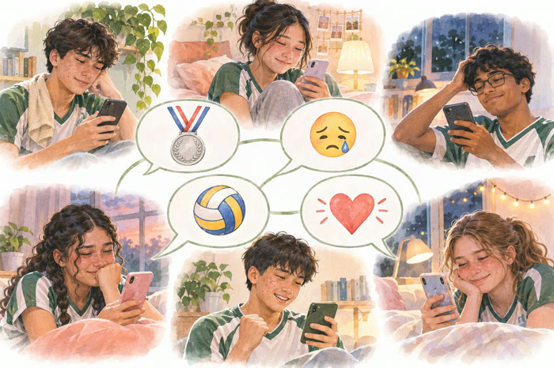

Listen to the text
Speed:

Vlad from Dnipro plays in an international school team of gamers. His teammates are Oliver from Manchester, Mateo from Madrid and Aiko from Osaka. They have never met in real life, but they have played together for a year. Yesterday their team lost the final of an online school tournament. An hour later Vlad opened the team chat. Oliver: Hey guys. Is anybody still awake? Vlad: I am. I can't sleep. I keep seeing that last round. Mateo: Same here, bro. We were so close. Two points! Oliver: It was my fault. I should have waited for you, and I ran in alone. Sorry, dudes. Aiko: Stop it, Oliver. We win as a team, and we lose as a team. Besides, your first three rounds were awesome. Vlad: She is right. Nobody played badly. The other team was just one step ahead of us. Mateo: Did you notice something odd about their captain? He never spoke. Not a word in the whole game. Aiko: I read about him. He is deaf. His team uses a system of signals on the screen. Oliver: Seriously? That is awesome. Now I respect them even more. Vlad: Me too. Hey, second place out of sixty-four teams is not bad at all. My dad said he was proud of me. He has never said that about a game before. Mateo: My mum made me a cake. It says "Number 2" on it. I am not sure if it is a joke. Oliver: Ha! Save me a piece, bro. Aiko: Guys, I have an idea. The next tournament is in spring. Let's train twice a week, not once. And let's watch the video of the final together on Saturday. Vlad: I am in. What time? It is not easy with three time zones. Aiko: Nine in the morning for you two, eight for Oliver, and five in the evening for me. Mateo: Nine on a Saturday? You are cruel. OK, I will be there. Oliver: And one day we should meet for real. Just hang out, no computers. Maybe next summer? Vlad: You are all welcome in Dnipro. My grandmother will feed you until you can't move. Aiko: Deal. Let's keep in touch about it. Now go to sleep, all of you. That is an order from your captain. Vlad closed his laptop and smiled. They had lost the final, but he felt like a winner.
Tap any sentence to hear it again.
Сподобалось? На сайті ще більше матеріалів для вчителів!
Reader, презентації, ігри, діагностичні та контрольні роботи до підручників 1-11 класів.
Перейти на сайт materials.allaenglish.com